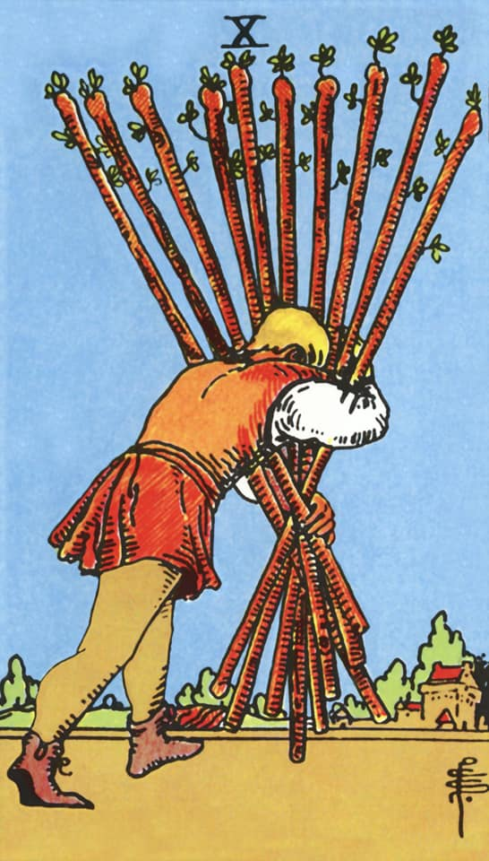

O Dez de Paus é uma carta do Tarô que simboliza a transformação, a renovação e a liberdade. Ele representa a necessidade de deixar para trás o passado e abraçar novas oportunidades. O Dez de Paus também pode indicar um período de expansão e crescimento, onde a pessoa se sente empoderada para tomar decisões importantes em sua vida.